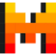

МолекулаАгрегаторы нейросетей
Молекула объединяет модели для текстов, изображений, видео и музыки. В одном аккаунте можно подобрать инструмент под этап работы, сохранить инструкции проекта и использовать готовые роли.
К задаче в МолекулеРаздел «Для аналитиков»: варианты ИИ для этой задачи, описания возможностей и переходы к обзорам. Сравните несколько решений на одинаковом примере.
Передайте обезличенную таблицу продаж с описанием столбцов и периода. Молекула поможет рассмотреть изменения и необычные значения, подготовить вопросы к данным; причины изменения выручки подтверждайте сведениями о ценах, ассортименте и событиях бизнеса.
Проанализируй таблицу продаж по неделям и товарам. Выдели заметные изменения и пропуски. Отдели наблюдения от предположений о причинах, укажи, каких данных не хватает для вывода.
Молекула объединяет модели для текстов, изображений, видео и музыки. В одном аккаунте можно подобрать инструмент под этап работы, сохранить инструкции проекта и использовать готовые роли.
К задаче в МолекулеChartPixel подготавливает диаграммы и аналитические пояснения из файлов данных либо веб-страниц. Обработка включает очистку материала и создание дополнительных признаков. ИИ также помогает с аннотациями и статистическим разбором, позволяя рассматривать обнаруженные особенности набора данных в наглядном виде.
«Deepsheet» разбирает данные для рабочего анализа.
«Electe» разбирает сведения о конкурентах для сравнения.
Obviously AI помогает создавать прогнозные модели без самостоятельного программирования, а затем развёртывать их, отслеживать работу и подключать к другим процессам. Для оценки выберите задачу с известным исходом и понятным моментом прогноза. Проверьте качество исходных данных и не передавайте модели сведения, появляющиеся только после прогнозируемого события.
«PromptWave AI» работает с материалами для социальных площадок. «PromptWave AI» помогает отвечать на отзывы.
Для «Shape» сначала определите свою задачу и требуемый результат. Карточка относится к направлению «Данные и аналитика».
«Channel» разбирает данные для рабочего анализа.

Для «Mistral-medium» сначала определите свою задачу и требуемый результат. Карточка относится к направлению «Данные и аналитика».
Olli AI помогает создавать информационные панели и аналитические материалы для организаций. Пользователь может задавать специальные вопросы и получать соответствующие ответы. Инструмент связывает персональное аналитическое обращение с формированием представления данных, не обещая измеренную скорость работы или правильность последующего делового решения.
«Rose AI» представлен в разделе «Данные и аналитика». При выборе проверьте нужную операцию и условия работы с результатом.
VERSE AI помогает взаимодействовать с PDF через чат. Набор возможностей охватывает генерируемые ответы и визуальная поддержка при работе с документом. Продукт связывает разговорный запрос с содержимым PDF и его наглядным представлением, позволяя рассматривать материал через текстовый диалог в пользовательском интерфейсе.

DeepSeek используют для разговорных задач, объяснения кода и подготовки программных решений. API позволяет встроить модель в приложение, управляя входными сообщениями и обработкой ответа.
«MarvelAI» разбирает данные для рабочего анализа.
«PolyAnalyst» разбирает данные для рабочего анализа.
«Rows» разбирает данные для рабочего анализа. «Rows» помогает составить последовательность маркетинговых действий.
«Supadash» помогает подготовить запрос к базе данных.
«Ajelix AI Excel Tools» представлен в разделе «Продуктивность». При выборе проверьте нужную операцию и условия работы с результатом.
Для «Chat With Data» сначала определите свою задачу и требуемый результат. Карточка относится к направлению «Данные и аналитика».
«Excel Formul Bot» готовит формулы электронной таблицы по описанию расчёта.
Сравнивать «EZQL» с другими инструментами раздела «Данные и аналитика» удобнее на одинаковом исходном материале.
«MonkeyLearn» представлен в разделе «Анализ данных». При выборе проверьте нужную операцию и условия работы с результатом.
«Plusdocs» собирает материал для презентации.
Сравнивать «Powerdrill» с другими инструментами раздела «Чат-боты и ассистенты» удобнее на одинаковом исходном материале.
Для «SimplyPut» сначала определите свою задачу и требуемый результат. Карточка относится к направлению «Данные и аналитика».
«Vizzy» помогает представить данные на диаграмме.
Wondrful помогает аналитикам разбирать документы и получать ответы на вопросы к их содержанию. Инструмент ориентирован на выделение информации из подходящих материалов. Для проверки задайте вопрос с известным ответом и сравните итог с нужным фрагментом; при объединении документов важно не смешивать периоды, организации и условия разных источников.
КонспектGPT подготавливает структурированные учебные заметки из файлов и записей лекций. Российский сервис также расшифровывает аудио и видео, решает задачи по фотографии и создаёт учебные работы. Эти возможности объединяют обработку исходного материала и подготовку письменного содержания для дальнейшего изучения темы.
«Accio AI» помогает подготовить запрос к базе данных.
«AI Surge Cloud» разбирает данные для рабочего анализа.
«Avanzai» разбирает данные для рабочего анализа. Дополнительно «Avanzai» помогает готовить изменения программного кода.
Сравнивать «Collectif» с другими инструментами раздела «Данные и аналитика» удобнее на одинаковом исходном материале.
Equals помогает анализировать данные с участием ИИ и предоставляет совместную работу в реальном времени. В инструменте доступны генерация формул и подготовка SQL, а также визуальные диаграммы. Интеграции с другими платформами дополняют обработку данных и рассмотрение результатов участниками рабочего процесса.

В инструменте «Finalle AI» можно исследовать тему и разбирать найденную информацию. Ещё одно направление работы: разбирать финансовые показатели и рыночные данные.
Hex объединяет командную работу с данными, запросами, блокнотами и отчётами. В среде можно использовать SQL, Python и R либо подход без кода. Платформа также включает задачи ИИ, связывая анализ данных с совместным рассмотрением результатов и выбранным способом программной или визуальной работы.
Для «Soccersm Analytics AI» сначала определите свою задачу и требуемый результат. Карточка относится к направлению «Данные и аналитика».
«Undermind AI» разбирает данные для рабочего анализа.
Bara Platform предоставляет анализ данных и прогнозные сведения для предприятий. Инструмент также подготавливает рекомендации и визуализированные наборы данных. Эти возможности относятся к рассмотрению рабочих решений, связывая исходную информацию и её аналитическое представление в рамках выбранного организацией процесса обсуждения дальнейших действий.
«BuildPrompt» разбирает содержимое документов.
Formulagod помогает работать с данными внутри Google Sheets средствами ИИ. Инструмент предназначен для изменений и вычислений по диапазону ячеек. Пользователь обращается к возможностям таблицы через встроенного помощника, связывая обработку значений с расчётной задачей в используемом табличном окружении.
Для «Genius Sheets» сначала определите свою задачу и требуемый результат. Карточка относится к направлению «Данные и аналитика».
«GPTExcel» готовит формулы электронной таблицы по описанию расчёта.
«HogwartsAI» помогает представить данные на диаграмме.
MyLens AI извлекает информацию из документов и представляет её в форме интеллект-карт. Продукт предназначен для учебной, исследовательской и деловой работы с материалами. Основной сценарий связан с выделением содержательных связей: исходный документ становится основой схемы, по которой можно обсуждать структуру темы и возвращаться к отдельным сведениям.
Orchard объединяет материалы сайтов, файлов и документов для работы с ИИ-помощником. Пользователь может искать сведения и обсуждать документы в чате с несколькими участниками. Решение ориентировано на аналитические задачи; в описании предусмотрены разные варианты доступа для личной и профессиональной работы.
«Datalytica» разбирает данные для рабочего анализа.
«FinanceGPT» помогает разбирать финансовые показатели.
Сравнивать «Hermes 3» с другими инструментами раздела «Данные и аналитика» удобнее на одинаковом исходном материале.
Страница 1 из 3